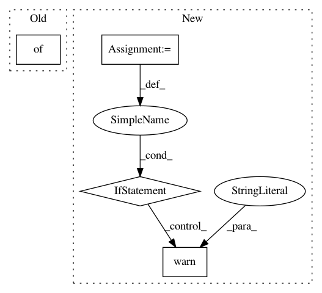

8a9344ead3be54cf1d427b30888e0e84ffe4d20a,hypertools/tools/text2mat.py,,text2mat,#,11
Before Change
}
// text models
texts = {
"LatentDirichletAllocation" : LatentDirichletAllocation,
"NMF" : NMF
}
// support user defined vectorizer model
if vtype in ("class", "class_instance"):
if hasattr(vectorizer, "fit_transform"):
After Change
data = [data]
// get data types
dtypes = list(map(check_dtype, data))
// if all data are vectorizer objects and have the same vocab, skip vectorizing
if all([dtype is "vecobj" for dtype in dtypes]):
if all_vocabs_same(data):
vectorizer=None
warnings.warn("Skipping vectorization step. Vectorizer objects "
"have the same vocabulary.")
else:
// otherwise, recover the original data for any vectorizer object
data = list(map(inv_vecobj, data))
// check the type of the vectorizer model
vtype = check_mtype(vectorizer)
// support user defined vectorizer model
if vtype in ("class", "class_instance"):
In pattern: SUPERPATTERN
Frequency: 3
Non-data size: 4
Instances
Project Name: ContextLab/hypertools
Commit Name: 8a9344ead3be54cf1d427b30888e0e84ffe4d20a
Time: 2018-01-22
Author: andrew.heusser@gmail.com
File Name: hypertools/tools/text2mat.py
Class Name:
Method Name: text2mat
Project Name: has2k1/plotnine
Commit Name: 035083f62466d569f2fbc576c887cf770bc5b057
Time: 2019-09-24
Author: has2k1@gmail.com
File Name: plotnine/stats/stat_density.py
Class Name:
Method Name: compute_density
Project Name: jazzband/django-debug-toolbar
Commit Name: 908b49cb7d2d527b701996f0d0b9e1e19e765819
Time: 2013-11-24
Author: aymeric.augustin@m4x.org
File Name: debug_toolbar/settings.py
Class Name:
Method Name: